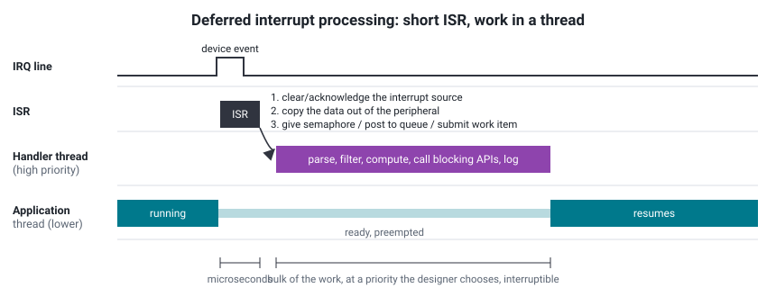

Interrupts and deferred processing
Interrupts are how the outside world reaches the firmware. They outrank every task, so the way you split work between an ISR and a task decides the latency of the whole system.
- Define interrupt latency and task response latency.
- State the rules an ISR must follow in an RTOS, and why.
- Explain how interrupt priorities relate to task priorities, and what kernel-aware and zero-latency interrupts are.
- Describe deferred interrupt processing with a handler task and with a work queue, and choose between them.
- Recognise which kernel calls are ISR-safe.
Interrupts in an RTOS
Interrupt latency: the time from the hardware asserting an interrupt request to the first instruction of its ISR. It includes the time the CPU had interrupts masked when the request arrived.
Task response latency: the time from the interrupt request to the first instruction of the task that handles the event. It adds the ISR duration, the scheduler decision and the context switch, plus any time spent in higher-priority tasks or ISRs.
Interrupt priorities and task priorities are two separate scales. The interrupt controller (the NVIC on Cortex-M) arbitrates between interrupts; the RTOS scheduler arbitrates between tasks. Any ISR, even the lowest-priority one, preempts the highest-priority task.
The kernel needs short critical sections in which it masks interrupts to update its own data structures. Those sections add directly to interrupt latency. Many Cortex-M ports mask only interrupts at or below a configured priority (using the BASEPRI register), which splits interrupts into two classes:
- Kernel-aware interrupts may call ISR-safe kernel functions. They are masked during kernel critical sections.
- Zero-latency interrupts are never masked by the kernel, so their latency is as low as the hardware allows. In exchange they must not call any kernel function: the kernel may be in the middle of updating the very structure the call would touch.
The rules for an ISR
- Never block. An ISR has no TCB; the scheduler cannot suspend it. Only non-blocking kernel calls are allowed: give, send with no wait, set bits, submit work.
- Never use a mutex. A mutex has an owner task, and an ISR is not a task. Priority inheritance would have nobody to boost.
- Be short. While an ISR runs, every task and every lower-or-equal-priority interrupt waits.
- Clear the interrupt source before returning, or the interrupt fires again immediately.
- Share data safely. Data shared between an ISR and a task needs protection on the task side (briefly masking that interrupt, or using atomic operations or a lock-free queue). A mutex cannot protect against an ISR.
Deferred interrupt processing
Deferred interrupt processing (top half / bottom half): the ISR performs only the time-critical part of the handling (acknowledge the device, capture volatile data) and signals a task, which performs the rest of the work at a thread priority chosen by the designer.

Benefits: interrupt latency stays low for every other interrupt; the processing can use blocking APIs, mutexes and logging; and its urgency becomes a task priority you can reason about with the rest of the task set.
There are two common forms:
| Dedicated handler task | Work queue | |
|---|---|---|
| Mechanism | A task blocks on a semaphore, queue or notification; the ISR signals it. | A kernel-provided thread runs submitted work items one at a time; the ISR submits an item. |
| Priority | Chosen per handler | One priority for all items in that queue |
| Memory cost | One stack per handler | One shared stack |
| Timing isolation | Good: handlers do not delay each other except by priority | Poor: a slow item delays every item behind it |
| Use for | Hard-deadline or high-rate handling | Occasional, short, non-critical follow-up work |
The signalling object between ISR and handler is the subject of Part II: a binary semaphore or task notification to say "something happened", a counting semaphore to count occurrences, a message queue to pass the data itself.
Worked example: a UART command line
At 115200 baud with 8N1 framing, one byte takes 10 bit times: 10 ÷ 115200 ≈ 86.8 µs. A received byte must be read before the next one overwrites it (assuming a single-byte receive register, no FIFO).
- ISR: read the data register (this also clears the flag), store the byte in a ring buffer. If the byte is a newline, signal the command task. Duration: well under 1 µs.
- Command task (medium priority): blocks on the signal; when woken, copies the line out of the ring buffer, parses it, and executes the command, which may take milliseconds, log to flash, or wait for a mutex.
Had the parsing been done in the ISR, a 2 ms command would block every lower-or-equal-priority interrupt, and the UART itself, for 2 ms: about 23 byte times, so incoming bytes would be lost unless DMA or a FIFO covered the gap.
Note the choice of one signal per line rather than per byte: it wakes the task about 1/20th as often for typical commands, which saves context switches (Lesson 03).
Common mistakes
- Calling a blocking API in an ISR (taking a semaphore with a timeout, locking a mutex, sleeping). Depending on the kernel this asserts, faults, or corrupts scheduler state.
- Calling kernel functions from a zero-latency interrupt. It works in testing and corrupts the kernel when the interrupt hits one of its critical sections.
- Doing the processing in the ISR because "it's faster". It is faster for that one event, and slower for everything else.
- Protecting ISR-shared data with a mutex. The ISR cannot take it, so nothing is protected. Use brief interrupt masking, atomics, or a queue.
- Forgetting
volatileor atomic access for a flag written in an ISR and polled in a task: the compiler may keep it in a register and never see the change. - Heavy printing or logging from ISRs. Formatted output is slow and is usually not ISR-safe.
What this becomes in Zephyr
- Interrupts are wired with
IRQ_CONNECT()(or by the device driver from devicetree).k_is_in_isr()tells code which context it runs in. - ISR-safe calls include
k_sem_give(),k_sem_take(…, K_NO_WAIT),k_msgq_put(…, K_NO_WAIT),k_event_post()/k_event_set(),k_work_submit()andk_poll_signal_raise().k_mutex_lock()/k_mutex_unlock()are not ISR-safe. - Work queues: the system work queue (
CONFIG_SYSTEM_WORKQUEUE_PRIORITY, default −1, a cooperative priority; stackCONFIG_SYSTEM_WORKQUEUE_STACK_SIZE, default 1024 bytes) or a dedicated one started withk_work_queue_start(). Delayed work:k_work_schedule()on astruct k_work_delayable. - On this Cortex-M7,
irq_lock()masks kernel-aware interrupts via BASEPRI.CONFIG_ZERO_LATENCY_IRQS=yplus theIRQ_ZERO_LATENCYflag creates interrupts the kernel never masks. Such ISRs must not call kernel APIs. - The STM32F7 NVIC implements 4 priority bits (16 levels); Zephyr reserves part of that range for its own exceptions, so devicetree priorities are small numbers relative to what remains.